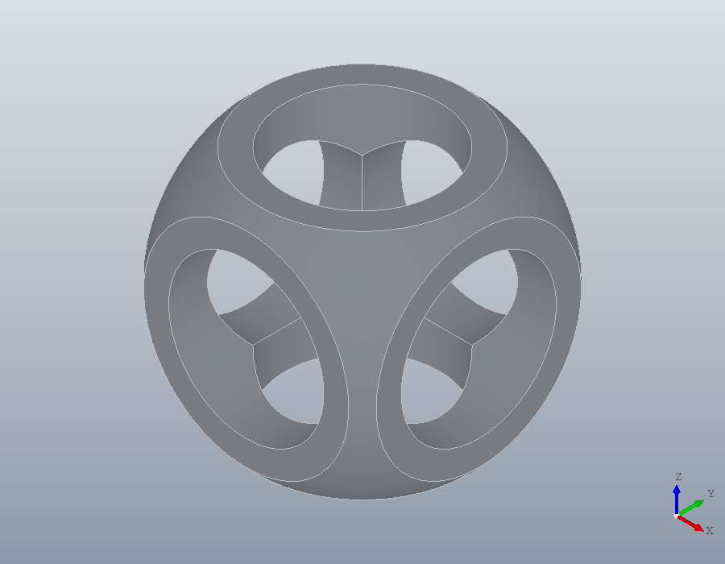
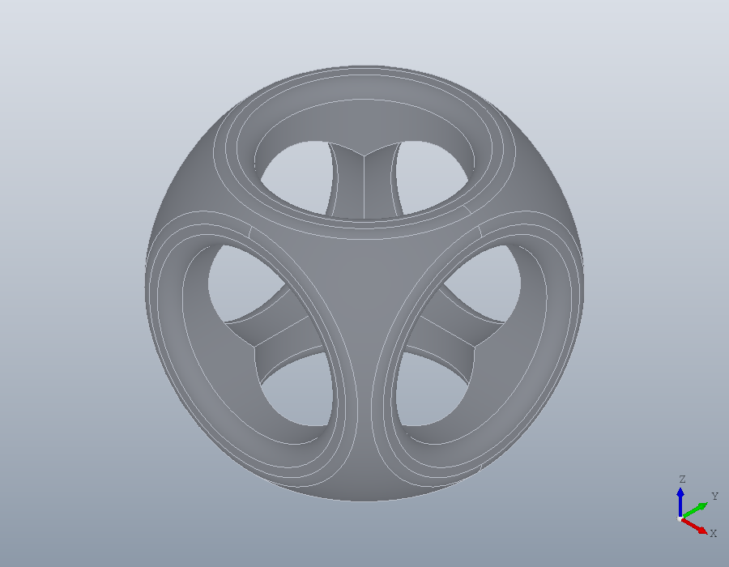

For OpenSCAD users
OpenSCAD's modelling words, nearly all of them, have a counterpart here, in Octave and with exact geometry. This page maps one to the other and rebuilds a classic OpenSCAD model.
What changes
- A shape is a value in a variable, not a node in a tree:
S = subtract (A, B)makes a new shape and leavesAandBas they were. A module is an Octave function that returns a shape. - Geometry is exact. There is no
$fn: a cylinder is a true cylinder, and facets are made only when a mesh is written, to a tolerancetessellateandwritetake. - A flat shape is a
geom.Regionlying in a plane, ageom.UCS; a solid is asolid.Shape. Lengths are millimetres and angles degrees. - Operations that can give several pieces, on regions, return a cell array of regions, largest first.
Solids
cube ([x, y, z])issolid.box (DX, DY, DZ), andcenter = trueis'Anchor', 'centroid'.cylinder (h, r)issolid.cylinder (R, H), andcylinder (h, r1, r2)issolid.cone (R1, R2, H);center = trueis'Anchor', 'centroid'.sphere (r)issolid.sphere (R).polyhedron (points, faces)issolid.polyhedron (polymesh.Mesh (V, F)), the faces given as triangles.surface (file)builds a solid from a grid of heights down to a base;solid.surface (X, Y, Z, H)fits an exact surface through such a grid and makes a skin of it,Hthick.solid.wedge,solid.ellipsoidandsolid.torushave no OpenSCAD counterpart.
Flat shapes
squareandpolygon (points, paths)aregeom.Region (OUTLINE, HOLES), from corners.circle (r)isgeom.Region ([r, 0, 1; -r, 0, 1]): two half circles, the third column the bulge of each.text ("...")isgeom.text ('...'), the outlines of the letters in any installed font.
Moving and changing
translate (v)istranslate (S, V).rotate (a, v)isrotate (S, A, V);rotate ([ax, ay, az])is three rotations, about x, then y, then z.mirror (v)ismirror (S, N).scale (f)isscale (S, F).scale ([fx, fy, fz])isresizewith'Uniform', false, which takes sizes rather than factors:resize (S, [fx, fy, fz] .* L, 'Uniform', false), withLthe sizes from[~, L] = bbox (S). It keeps the corner of the bounding box at the least x, y and z in place, where OpenSCAD keeps the origin.resize (newsize)isresize (S, SZ, 'Uniform', false). Without the option,resize (S, SZ)scales evenly, as large as fits withinSZ.color ([r, g, b])isS.Colour = [r, g, b], kept in STEP and 3MF files.- A region is moved by giving it another plane,
R.UCS = U, and hasmirrorandresizeof its own.
Booleans and hulls
union,differenceandintersectionareunion,subtractandintersect, for solids and for regions alike, each taking any number of shapes.hullishull. On regions it is exact, its lines tangent to the arcs; on solids it has flat faces, within a tolerance of the curved ones.
From flat to solid and back
linear_extrude (height = h)issolid.extrude (R, H);center = trueissolid.extrude (R, [H/2, H/2]), andtwistandscaleare the options'Twist'and'Scale'. OpenSCAD turns a positive twist clockwise, the package anticlockwise, so the sign changes.rotate_extrude (angle = a)issolid.revolve (R, A). The package turns a region about the y axis of its own plane; laid in the xz plane,R.UCS = geom.UCS ([0, -1, 0], [0, 0, 0]), it turns about the z axis as in OpenSCAD.offset (r = d)isoffset (R, D);offset (delta = d)adds'Corners', 'sharp', andchamfer = truemakes it'chamfer'.projection ()isprojection (S), andprojection (cut = true)issection (S, geom.UCS ()).
Repeating
- A
forloop oftranslateiscopy (S, D), a row ofDfor each copy; a grid isrectarray, and copies round an axis arepolararray. - Any other loop is an Octave loop with
union.
Files
importissolid.readfor STEP,polymesh.readfor STL, OBJ, PLY and 3MF, andgeom.readfor DXF.exportiswrite, a method of the shape written, the format named by the file's extension.
minkowski and multmatrix are not provided. A part is placed by a geom.UCS, which turns and moves it but never shears it.
A classic model, rebuilt
A cube and a sphere intersected, and three bores along the axes taken out of what is left. In OpenSCAD:
difference () {
intersection () {
cube (15, center = true);
sphere (10);
}
cylinder (h = 20, r = 5, center = true);
rotate ([90, 0, 0]) cylinder (h = 20, r = 5, center = true);
rotate ([0, 90, 0]) cylinder (h = 20, r = 5, center = true);
}And here:
body = intersect (solid.box (15, 15, 15, 'Anchor', 'centroid'), ...
solid.sphere (10));
c = solid.cylinder (5, 20, 'Anchor', 'centroid');
S = subtract (body, c, rotate (c, 90, [1, 0, 0]), rotate (c, 90, [0, 1, 0]))
show (S);S =
solid.Shape: 1 solid, 13 faces, 42 edges
What the package adds
The edges of the result are exact circles, so they can be chosen by what they are and rounded. edges with 'Type', 'circle' picks the rims of the bores and of the sphere, and fillet rounds them:
F = fillet (S, edges (S, 'Type', 'circle'), 0.8);
show (F);
A section is exact too, lines, arcs and splines rather than a polygon, so it can be built from again. The cut through the middle falls into four pieces:
R = section (F, geom.UCS ());
numel (R)
R{1}.Outlineans = 4
ans =
geom.Path: closed, 9 segments, 3 arcs, 2 splinesAnd the part goes to a CAD program as STEP, its curved faces kept, as well as to a slicer:
write (F, 'csg.step');
write (F, 'csg.stl');
volume (solid.read ('csg.step'))ans = 959.08